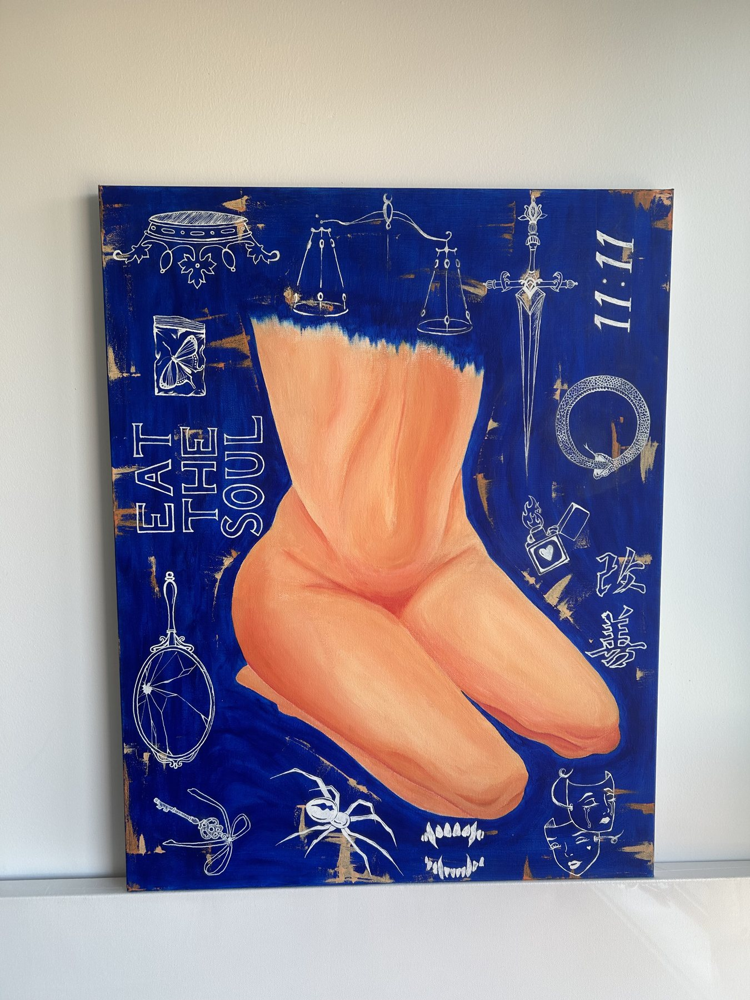

I
Eat the Soul (11:11)
- Series
- Dual Bloom
- Medium
- Acrylic & paint marker on canvas
- Status
- Original — on request
The story we show: a body folded into itself, warm and at rest on a field of cobalt scuffed with gold. The story we hide is drawn around it in white — a crown above, justice weighed against desire, a butterfly kept too safe to fly, a mirror that has already cracked.
Look again at 11:11 — the minute when both hands agree.